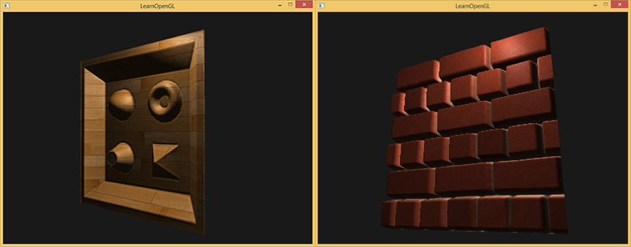
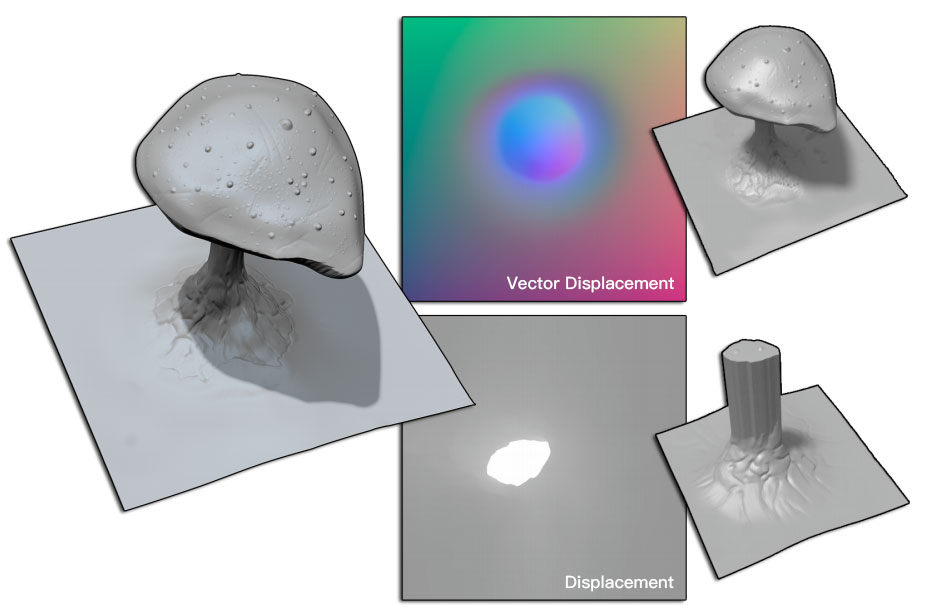
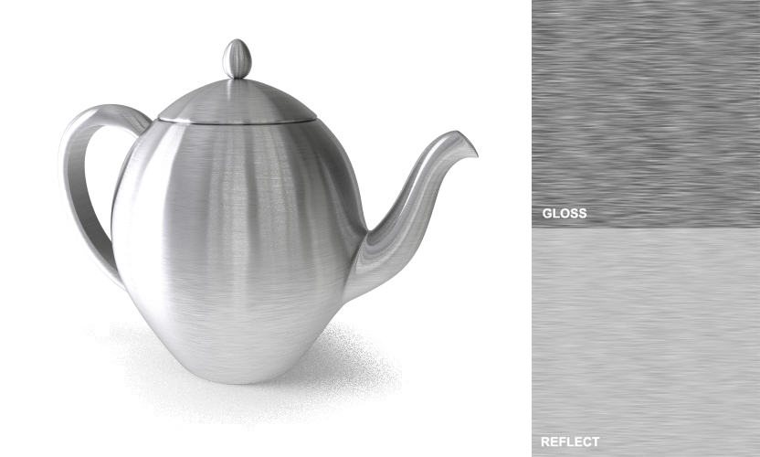
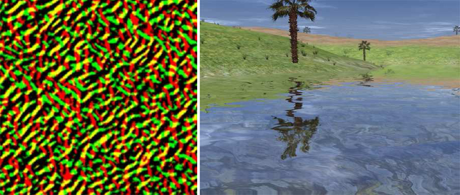

游戏模型制作中用到了很多贴图类型，通过不同类型贴图的组合使用以达到最终需要得到的模型效果。最常见的类型有Diffuse、Emissive、Normal、Opacity、Specular、Roughness。游戏制作中根据项目资产的需要使用不同的贴图类型。

在基于物理纹理的渲染（PBR）中，有两种最常见的工作流程，即金属/粗糙度和高光反射/光泽度。在使用过程中，两种工作流程各有利弊（详见PBR-Guide）。
1. 颜色贴图
颜色贴图主要为Diffuse、Albedo、Base Color三种。一般认为这三者是等同的。
1.1 Diffuse
光照模型在Lambertian（兰伯特材质球）着色器中会把颜色贴图叫做Diffuse Map（也叫颜色贴图），通常在绘制这张Diffuse Map的时候会把物体的结构阴影信息也绘制进去。在传统工作流中，Diffuse Map是带着光影信息的。
Diffuse Map（漫反射颜色）应该表示物体表面的颜色，在Unity中叫做Albedo。在Specular/Glossiness工作流程中，对于金属材质而言它没有漫反射(或者说比较少)，所以使用黑色来填充。而非金属材质反射光少于金属材质，并且它折射的光只有较少的吸收通常重新折射回表面，因此对于非金属材质，使用的是漫反射颜色来填充。需要特别注意的是，漫反射纹理不应该包含任何光照信息，因为将基于（环境）添加光照到物体的纹理上。
1.2 Albedo
主要体现模型的纹理和颜色。Unity的Shader（着色器）中，把颜色贴图叫做Albedo。
1.3 Base Color
Base Color是把颜色贴图剔除光影变化后，我们看到的最基础的颜色。在PBR工作流中颜色贴图叫做Base Color， 其中包含了电介质的反射颜色和金属的反射率值这两种类型的数据。因为Base Color Map中带了金属的反射率值，所以需要配合上Metallic Map一起使用的。
比较容易造成混淆的是金属/粗糙度工作流中的Base Color和高光反射/光泽度工作流中的Diffuse(Albedo)的区别，两种工作流使用了不同的贴图方法来处理颜色。实际上，金属/粗糙度工作流中的Base Color本质上是高光反射/光泽度工作流中的Diffuse和Specular的结合，这也是有时候通过先创建金属/粗糙度材质再将其转化为高光反射/光泽度的原因之一。
在高光反射/光泽度工作流中，Diffuse贴图严格影响着材质的基本颜色而对材质的其他特征（如发射率）没有影响。对于介电材质而言，其材质颜色来自Diffuse贴图；对于金属材质而言，大部分颜色来自Specular高光贴图。
在金属/粗糙度工作流中，BaseColor贴图实则包含了漫反射和高光贴图的信息。而Metallic贴图这决定了有多少BaseColor被解释为漫反射或者高光。
*1.4 Gradient&Ramp、ColorLUT
Gradient&Ramp Map（渐变图）和ColorLUT（颜色查找表）也可以认为是颜色贴图的一种，这类贴图通过在一维或二维的方式将一种颜色映射到另一种颜色。且通常作为全局资源使用（不是特定于某一模型）。
Valve在Team Fortress 2中使用渐变纹理来控制漫反射光照，渲染游戏中具有插画风格的角色。
ColorLUT是预先生成的一张结果纹理，可用于优化复杂光照的渲染，如皮肤、毛发等。
2. 凹凸贴图
凹凸贴图主要为Bump、Normal和Displacement三种，三种贴图都是为模型提供更多的细节。其中Displacement有时用于改变模型的顶点位置（作为Parallax视差贴图使用），而Bump和Normal则不会改变模型的顶点位置。
就实现复杂度/质量与性能开销而言，Dispalcement>Normal>Bump(>Reflection)。
2.1 Bump
Bump Map（凹凸贴图 ）是一个类似于法线贴图的概念，有时也称为Height（高度图）。但是凹凸贴图只包含高度信息而不包含角度信息。凹凸贴图的优点是可以很直观地看出模型表面的凹凸情况（颜色越浅表明该位置的表面越像外凸起，反之亦然），但是计算更复杂，因此更性能开销更大。高度图通常与法线贴图结合使用，用于给出表面凹凸的额外信息。
Substance Painter、Substance Designer导出的Height高度图等同于Bump凹凸贴图，而不是Displacement置换贴图的信息。
2.2 Normal
Normal Map（法线贴图）是凹凸映射技术的另一种应用。法线贴图包含角度信息而不包含任何高度信息，其R、G、B三个通道储存的信息表示了斜面的方向和陡峭程度。使用法线贴图和高度贴图可以确保光照和位移是一致的，能够带来更真实的效果。

这一特征使得我们可以使用法线贴图储存的角度信息来柔化尖锐的边缘（仅使用Bump高度信息无法做到这一点，因为只有高度信息无法知道边缘应该沿着哪个方向弯曲）。柔化边缘不仅可以让物体看起来更真实，还能进一步突出物体的形状（尤其是在游戏对象在屏幕上占比较小的时候）。
由于法线贴图存储的是表面的法线方向，而方向是相对于坐标空间而言的。因此存在三种不同的空间法线贴图：Tangent切线空间、Object对象空间、World世界空间，三种法线贴图都有各自的优缺点且能达到相同的效果，只是计算方式有所不同。
2.2.1 Tangent Space
Tangent Space（切线空间），顾名思义，切线空间法线是基于每个面的切线方向。切线空间下的法线贴图是最常见的法线贴图形式，大部分看起来都是浅蓝紫色的。其中，B通道表示法线方向的斜率；R通道表示左右切线方向的斜率；G通道表示切线方向向上或向下的斜率（OpenGl向上，DirectX向下）。
2.2.2 Object Space
Object Space（对象空间或模型空间）法线贴图基于整个对象而不是每个面，大部分看起来都是五颜六色的。对象空间法线贴图在渲染上较快，但由于其无法镜像任何UV，在对称模型上会浪费大量纹理空间，且无法进行UV动画。因此在很多情况下切线空间较优于对象空间。
2.2.3 World Space
World Space（世界空间）是基于全局坐标的法线贴图，也是三种法线贴图中最不灵活的一种。 这种类型的法线贴图一般仅用于环境这类大型，静态和非对称的物体，或者临时用于诸如Substance Painter、Substance Designer之类软件中作为计算特殊效果（如风化效果）的一种方法。
2.3 Displacement
Displacement Map（置换贴图，也叫移位贴图）可以改变模型对象的几何形状，因此在提供最真实的效果的同时也会大幅增加渲染性能的开销。
置换贴图能实现很多仅仅通过Bump和Normal无法实现的效果（尤其是模型对象的轮廓表现）。

置换贴图也常作为高度图来生成地形，并结合凹凸贴图实现丰富的地形效果。
2.3.1 Parallax Map
置换贴图的另一个用途是作为Parallax Map（视差贴图，也称为Virtual Displacement Map虚拟置换贴图）使用。
视差贴图是一种更高级的技术，能够提供比凹凸贴图更多的深度。
视差贴图通过偏移每个像素的纹理坐标以达到更好的视觉表现，但在某些视角仍存在陡峭部分不正确与不支持自遮蔽的问题，效果仍不如性能开销更大的视差贴图技术。
2.3.2 Steep Parallax Map
Steep Parallax Map（陡峭视差贴图/映射）是视差贴图的改进版。通过增加采样数量来提高准确性（普通视差贴图仅使用一个样本），因此在陡峭高度变化较大的地方也能显示出正确效果。
但陡峭视差贴图同样有自己的问题，因为这个技术是基于有限的样本数量，因此我们可以在陡峭变化大的地方看到明显的锯齿效果及断层。对此，目前两种常用的解决方案为Relief Map（浮雕贴图）和Parallax Occlusion Map（视差遮蔽贴图）。
2.3.3 Parallax Occlusion Map
Parallax Occlusion Map（视差遮蔽贴图/映射）与陡峭视差贴图的原理基本相同，但在不同的样本之间进行了线性插值，因此能在一定程度上解决陡峭视差贴图存在的问题。

2.3.4 Relief Map
Relief Map（浮雕贴图）能够实现比陡峭视差贴图更深的凹凸深度，并能实现很好的自阴影和遮挡效果，但其性能开销也比陡峭视差贴图高。
2.3.5Vector Displacement
Vector Displacement Map（矢量置换贴图）是高度贴图的扩展，与传统Displacement（置换贴图）不同的是矢量置换贴图记录了模型上各点的高度和方向信息，并储存为16/32位浮点颜色信息。

传统的置换贴图使用的是低模的UV坐标，贴图记录了高模和低模之间的差异。而矢量置换贴图在使用类似映射方法的同时，而另一个模型最近的顶点之间的距离，还能在空间中移动顶点。因此也能记录复杂的凹面下（如蘑菇、耳朵等）的顶点信息，将雕刻细节从一个模型转移到另一个模型。
以这个蘑菇为例：传统的置换贴图只能做到改变其高度，但是用矢量置换贴图可以实现更接近原始造型的效果。

3. 反射贴图
与颜色贴图中的Diffuse和Base Color一样，反射贴图中根据工作流的不同也有不一样的贴图类型。
3.1 Metal - Roughness
在金属/粗糙度工作流中，使用的反射贴图为Metallic和Roughness。
3.1.1 Metallic
Metallic（金属贴图）起到类似于蒙版的作用，区分固有色贴图中的金属和绝缘体数据。在金属性贴图中，0（黑色-0 sRGB）表示绝缘体，而1（白-255 sRGB）表示金属。
金属贴图的运行方式类似于掩码的运作方式，因为该贴图向着色器阐释如何分析基础色中的数据。金属感对象的光泽度由粗糙度控制。 材质越粗糙，其光泽度就会越低， 而缺少粗糙度将使金属显得非常有光泽。
3.1.2 Roughness
Roughness（粗糙度贴图）定义材质得粗糙度信息，0（黑色-0 sRGB）表示光滑，1（白-255 sRGB）表示粗糙。粗粗糙度是指造成光漫射的表面不规则状况，反射方向根据表面粗糙度自由变化。这改变了光的方向，但是光强度保持恒定不变。表面越粗糙，高光越散越暗。表面越光滑，高光反射集中，尽管反射的光的总量是一点的，表面也会更亮，光会更强。
粗糙度贴图采样得来的粗糙度数值会影响一个表面的微平面统计学上的取向度。一个比较粗糙的表面会得到更宽阔更模糊的镜面反射（高光），而一个比较光滑的表面则会得到集中而清晰的镜面反射。
Roughness粗糙度贴图 与Glossiness Map光泽度贴图是相反的。Roughness 反向就变成Glossiness Map 。
3.2 Specular - Glossiness
在高光反射/光泽度工作流中，使用的反射贴图为Specular和Glossiness。
3.2.1 Specular
Specular（高光贴图）表示高光得范围、强度、颜色，在Specular工作流中，颜色越亮高光越强，黑色表示没有高光。

高光反射规定了金属的反射率值和非金属的F0。使用RGB贴图可以在贴图中创建不同反射率的电介质材质。
高光度也可影响材质的光泽度。 将“高光度（Specular）”值调整到接近1时，将使材质的反射和反射高光显得特别强特别显眼， 而将该值减小到接近0会弱化反射及反射高光，直到它们几乎不存在为止。
高光度（Specular）也深受粗糙度影响。 即使“高光度（Specular）”输入设置为1，通过将“粗糙度（Roughness）”的值设置为1，也可以取消高光度效果。 另外，如果启用了金属感，那么调整高光度不会影响材质。
3.2.2 Glossiness
Glossiness（缩写Gloss，光泽度贴图），定义材质得粗糙度信息，跟Roughness相反，0（黑色-0 sRGB）表示粗糙，1（白-255 sRGB）表示光滑。
光泽度无非是指表面反射光线的能力。 表面能够反射的光线越多，光泽度越高。 表面能够反射的光线越少，光泽度越低。 表面反射光线的能力受环境中各种因素的影响，例如落在对象上的那些非常小颗粒的灰尘，以及接触对象时从手上沾染到对象上的油污， 所有这一切都会影响表面反射光线的能力。
*3.3 Anisotropic Map

Anisotropic Map（各向异性贴图）是一种特殊的反射贴图。拉丝金属通常具有各向异性的高光，这是由表面的微划痕引起的。有时使用各项异性贴图去制作拉丝金属的效果。
4. 结构贴图
4.1 Ambient Occlusion
Ambient Occlusion（AO，环境光遮蔽贴图）描述了较大尺度的光线遮蔽信息，通常由高模烘培得到。指表面某点能获得多少环境中的光，用来模拟物体之间所产生的阴影，在不打光的时候增加体积感。
比如我们有一个砖块表面，反照率纹理上的砖块裂缝部分应该没有任何阴影信息。然而AO贴图则会把那些光线较难逃逸出来的暗色边缘指定出来。在光照的结尾阶段引入环境遮蔽可以明显的提升你场景的视觉效果。

环境光遮蔽贴图基于物体与其他物体越接近的区域，受到反射光线的照明越弱这一现象来模拟现实照明的一部分效果。该贴图只影响漫反射分配，不影响高光反射分配。
4.2 Cavity
Cavity Map（缝隙图）描述了比AO图更小尺度的光线遮蔽信息，通常由高模或者法线贴图烘培得到。
缝隙图只包含模型对象表面的凹面区域而不包括凸面区域，因此缝隙图通常大部分都是白色的，只有凹陷区域是深色的。与AO图不同的是，缝隙图影响不仅会影响漫反射，还会影响高光反射部分。
4.3 Bent Normal
Bent Normal Map（环境法线贴图）有助于减少照明构建之后发生的漏光现象。
环境法线贴图能够和AO图结合使用以改善漫反射间接照明，通过将环境发现代替法线用于间接照明来使漫反射间接照明更接近于全局光照。
4.4 Curvature
Curvature（曲率贴图）是存储网格的凸度/凹度的纹理，可用于遮盖表面会出现更多磨损的地方或可能发生次表面散射的地方（凸面），可能积累更多污垢（凹面）的地方，以检查表面的连续性等。
曲率贴图允许提取和存储凹凸信息。黑色的值代表了凹区域，白色的值代表了凸区域，灰色值表示中性/平坦区域。。
4.5 Thickness
Thickness（厚度贴图）记录了表面厚度信息，可以用于辅助制作表面散射(SSS，简称3S材质)材质，或直接扩散/反照率假装SSS的效果。
其黑色代表薄的地方、白色代表厚的地方。
5. 光照与环境贴图
5.1 Light Map
Light Map（光照贴图）用来存储预渲染的光照信息，用于静态模型上的间接光照，解决实时动态光源效果不好且消耗性能的问题。
光照贴图通常存储了静态烘培光源的颜色和亮度，由于光照贴图是预渲染的，因此可以使用如光能传递等非实时方法来得到更真实的效果。
5.2 Spherical Environment Map
Spherical Environment Map（球面环境贴图）是最简单的反射映射技术之一。球面环境贴图将环境光存储在球面上，然后用环境光去渲染整个的物体。
由于是通过球体来存储环境信息，这就导致了描述的不是均匀的信息，会在靠近极点的地方出现扭曲（墨卡托投影：将地球进行投影到平面，维度高的地方在平面地图上看起来会更大）
5.2 Cube Map
Cube Map（立方体贴图）是环境映射的一种实现方法。环境映射可以模拟物体周围的环境，而使用了环境映射的物体可以看起来像镀了层金属一样反射出周围的环境。
立方体贴图包含了6张图像，对应着立方体的6个面，每个面表示沿着世界空间下的轴向观察所得的图像。
立方体贴图解决了球面环境贴图图像扭曲的问题，但立方体贴图不能模拟多次反射的结果。
5.3 Radiosity Normal Map
Radiosity Normal Map（辐射度法线贴图）是光贴图和法线贴图的特殊混合。可以将照明作为一组三个光照贴图进行烘焙，以存储照明矢量，而不仅仅是亮度/颜色。这使表面法线贴图可以接收定向照明，因此，通过烘焙的照明信息可以更准确地照明凹凸。
Valve在Half-Life 2中广泛使用了此方法，他们在GDC 2004论文*Half-Life®2/ Valve Source™Shading*中将其称为“辐射度法线贴图” 。
6. 其他贴图
6.1 ID/Mask
ID/Mask Map（ID、遮罩贴图）用于选择不同的区域，进行分别绘制。
6.2 Emissive
Emissive Map（自发光贴图）控制表面发射光的颜色和亮度。当场景中使用了自发光材质时，它看起来像一个可见光。物体将呈现发光效果。
自发光材质通常用于某些部位应该从内部照亮的物体上，例如监视器屏幕、高速制动的汽车盘式制动器、控制面板上的发光按钮，或黑暗中仍然可见的怪物眼睛。简单的自发光材质可以通过一个颜色和亮度来定义。
6.3 Opacity
Opacity（透明贴图）定义贴图的不透明度，用于裁剪表面的一部分。黑色是透明的部分，白色为不透明的部分，灰色为半透明的部分。
当材质使用不透明度贴图时，它将充当遮罩，该遮罩将隐藏对象的某些部分。例如可以将“不透明度”贴图用于剪切树叶形状，穿孔表面和网格等。
6.5 Position
Position Map（位置贴图）使用R/G/B三个通道描述X/Y/Z轴上顶点对应的位置。
通常位置贴图来实现模型底部到顶部的渐变效果等，如墙壁底部的污渍、石块底部的青苔。
6.6 Detail Map
Detail（细节贴图）是用于平铺的局部贴图纹理，以相对较低的成本，内存和性能来增加表面细节（微观和宏观）。
细节贴图通常为四方连续纹理，并由一组贴图组合而成（法线、反射率、光泽度等）。
6.7 Flow Map
Flow Map（流动贴图）存储的是向量场数据，可以用来制作流动的水面效果。

Valve在Portal 2和Left 4 Dead 2中广泛使用了此方法，他们在SIGGRAPH 2010论文*Vlachos/Water Flow in Portal 2*中分享了用流动贴图制作流动水面的技术。
6.8 DuDv Map
DuDv贴图是使用一种纹理扭曲另一种纹理的像素的一种简单方法。常用于火上的热雾、涟漪折射的水面等。

DuDv贴图与法线贴图类似，都是将方向信息存储在纹理中，但DuDv贴图仅用到了R通道和G通道。
DuDv的工作方式与视差贴图扭曲曲面的方式类似，只是DuDv不考虑视角（无视差）。从DuDv贴图中获取Du和Dv，对反射贴图中的每个像素，将Du添加到反射贴图的U纹理坐标，并将Dv添加到其V坐标。最后偏移反射贴图像素，从而产生失真。
7. 一些注意事项
在使用这些贴图时，如果要对其进行运算则需要格外注意其贴图储存的信息是否经过伽马编码。其中，颜色值和颜色操作的计算应该在线性空间内执行。
一般来说，基本颜色(Base Color)贴图在创建的时候就已经在sRGB空间了，因此我们需要在光照计算之前先把他们转换到线性空间。环境光遮蔽贴图(Ambient Occlusion maps)通常也需要我们转换到线性空间。而像金属度贴图(Metallic)和粗糙度贴图(Roughness)大多都会保证在线性空间中。
可以简单地区分为，如果贴图代表着我们看到的颜色，则它该被阐释为sRGB；如果贴图代表数据，则应该将其阐释为线性。
- 《Unity Shader入门精要》
- 《Real-Time Rendering 4th Edition》
- GAMES101:现代计算机图形学入门[http://games-cn.org/intro-graphics/]
- 游戏美术基础：游戏贴图[https://www.jianshu.com/p/c1ed26cbb6b4]
- Polycount - Texture types[http://wiki.polycount.com/wiki/Texture_types]
- 《Real-time Shallow Water Simulation and Environment Mapping and Clouds - Rene Truelsen》
- What are the different texture maps for?[https://help.poliigon.com/en/articles/1712652-what-are-the-different-texture-maps-for]
- The PBR Guide part 1[https://academy.substance3d.com/courses/the-pbr-guide-part-1-zh]
- The PBR Guide part 2[https://academy.substance3d.com/courses/the-pbr-guide-part2-zh]
- Diffuse/Specular vs BaseColor[https://resources.turbosquid.com/stemcell/stemcell-3d-modeling-workflow/stemcell-textures-materials/diffuse-specular-vs-basecolor/]
- Normal vs. Displacement Mapping & Why Games Use Normals[https://cgcookie.com/articles/normal-vs-displacement-mapping-why-games-use-normals]
- Physically-Based Rendering, And You Can Too![https://marmoset.co/posts/physically-based-rendering-and-you-can-too/]
- Level of Detail[https://resources.turbosquid.com/level-of-detail/]
- Elliminate Texture Confusion: Bump, Normal and Displacement Maps[https://www.pluralsight.com/blog/film-games/bump-normal-and-displacement-maps]
- VECTOR DISPLACEMENT MAPS[http://docs.pixologic.com/user-guide/3d-modeling/exporting-your-model/vector-displacement-Maps/]
- Parallax Map with Offset Limiting: A PerPixel Approximation of Uneven Surfaces
- BRUSHED METAL V-RAY MATERIAL[https://resources.turbosquid.com/library-tutorials/brushed-metal/]
- Half Avocado[https://quixel.com/megascans/home?category=3D%20asset&category=edible&category=fruit&assetId=ujcxeblva]
- Art of Lighting Game Environments in Unity[https://cgcookie.com/articles/art-of-lighting-game-environments]
- Detail Maps[https://docs.cryengine.com/display/SDKDOC2/Detail+Maps]
- 180701 UE4 Flowmap Fields Visualizer[https://www.youtube.com/watch?v=frfcRzuw6OM]
- Theory[https://learnopengl.com/PBR/Theory]
- Lighting[https://learnopengl.com/PBR/Lighting]
- Parallax Mapping[https://learnopengl.com/Advanced-Lighting/Parallax-Mapping]
- Case Study: Vector Displacement Mapping in Real-Time[https://80.lv/articles/case-study-vector-displacement-mapping-in-real-time/]